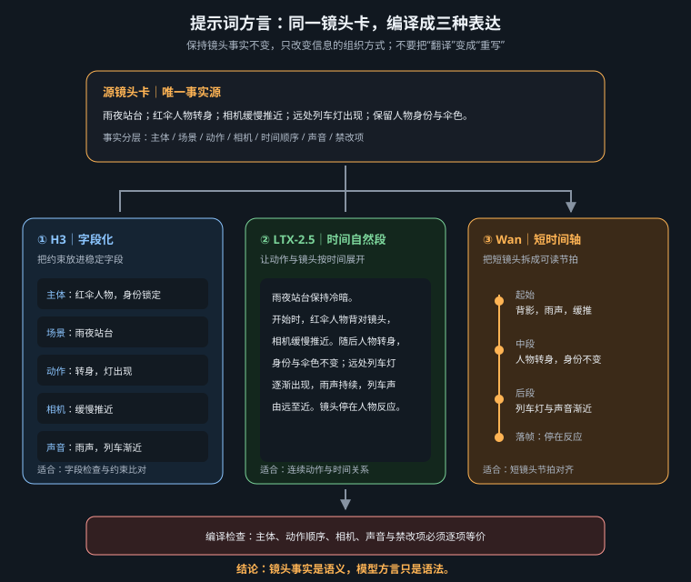

把创意编译成模型真正执行的时间、运动、参考关系与声音，而不是堆砌“电影感”形容词

本章只把当前官方资料能确认的提示格式写成事实。模型版本、网页入口、API 字段、时长、分辨率和输入模式会持续变化；提示词负责叙事与约束，平台面板负责提交规格。任何旧工作流中的 checkpoint、LoRA、采样步数或帧率，都不能自动成为新版本的固定参数。
静态图只需回答“这一帧有什么”，视频还必须回答“先发生什么、什么保持不变、相机如何观察、声音何时出现”。模型在有限时长内同时分配主体运动、镜头运动、材质变化和音频事件；若一条短镜头塞入奔跑、转身、开门、爆炸，再要求推镜、环绕和升降，动作会争夺同一段时间，常见结果就是漏动作、瞬移或形体崩坏。
可执行提示词有四个机制：时间排序把事件变成因果链；职责隔离避免画面、环境声和配乐互相泄漏；参考锚定说明哪个资产提供身份、构图、运动或音轨；结束保持给模型一个可收敛的最终状态。结构的价值是减少歧义，不是越长越好。
| 先决定 | 必须写清 | 不应混写 |
|---|---|---|
| 任务与输入 | 文生、首帧、首尾帧、末帧、全参考 | 不要把参考图内容当作新设计重述 |
| 表演 | 初始状态、唯一主动作、可见结果 | 情绪词不能代替眼神、姿态与呼吸 |
| 摄影 | 景别、唯一主运镜、速度、落点 | 推镜与变焦、跟拍与环绕不可随意并列 |
| 连续性 | 身份、服装、道具、空间、屏幕方向 | “keep consistent”不如逐项列出不变项 |
| 声音 | 对白、同期声、环境声、观众配乐的归属 | 不要把角色可听音乐写成非叙事配乐 |
| 路线 | 送模形态 | 最重要的边界 |
|---|---|---|
| MiniMax H3 基础模式 | 按任务需要的图对齐指令 + 三个核心字段 | T2VA 无图对齐行；I2VA、FL2VA、L2VA按各自锚点写 |
| MiniMax H3 Full-reference | 固定顺序的六段英文结构 | 标签全篇同义，detailed_description取代基础模式主字段 |
| LTX-2.5 | 约 200 英文词以内、按发生顺序推进的一段自然语言 | 不把 JSON、标签袋或 2.3 工作流原样送入 |
| Wan | 短镜头时间轴：初始→一个主动作→一个主运镜→结束保持 | 时长、分辨率、输入模式以当前平台入口为准 |
H3 基础模式的主体是 integrated_multimodal_description、overall_soundscape、non_diegetic_music。只有图像锚定任务才在最前加入图对齐指令：T2VA 直接从三字段开始；I2VA 把 <Picture 1> 对齐 0 秒；FL2VA 声明首图与尾图各自时点；L2VA 把图片落在最终镜头的结束时点。图对齐行后空一行，再进入三字段。
| 任务 | 图片的时间身份 | 正文应描述的路径 |
|---|---|---|
| T2VA | 没有图片锚点 | 从文本建立完整的起始构图、动作发展和结果，不添加图对齐行 |
| I2VA | <Picture 1>是 0 秒真实首帧 | 首帧锚点→动作开始→连续发展→结果；身份、服装、颜色和空间关系保持 |
| FL2VA | 两张图分别是开头与结尾 | 不要复述两张静帧，而要写姿态、物体、构图和光线如何连续缩小差异并抵达末帧 |
| L2VA | <Picture 1>只锚定最终时刻 | 推断合理前态→显式过渡路径→逐步收敛→在最后镜头准确落到参考图 |
I2VA 的首帧不是“风格参考”，而是视频在 0 秒的实际画面；L2VA 的末帧也不天然属于 [Shot 1]，多镜头时必须归到真实的最终 [Shot N]。FL2VA 通常优先单镜头连续插值，只有用户明确要求时才增加切镜。三种任务都应写清哪些参考特征保持不变，但不能让静态保留描述淹没真正需要生成的运动路径。
实际发声者使用全片稳定的 (S1)、(S2) 编号；首次出现时在标签外说明年龄、音色、音高或语速，台词原文只放进 <d>[Language] ...</d>，不得擅自翻译。画外音使用 says in an off-screen voiceover，并紧接着声明画面人物嘴唇保持闭合。招牌、字幕等真实可见文字放在英文双引号内并保留原文。角色听得到的广播、演唱和乐器属于戏内事件，应写进主时间线；只有观众听见的配乐才进入 non_diegetic_music。
| 字段 | 内容 | 验收问题 |
|---|---|---|
integrated_multimodal_description | 风格、构图、主体、动作、镜头、对白与戏内声音，按播放顺序展开 | 每一项是否可见或可听？后续切镜是否有递增时码？ |
overall_soundscape | 全片环境声、物理动作声、非语言人声，连续 1–4 句 | 是否误放对白、演唱或戏内音乐？ |
non_diegetic_music | 只有观众听见的配乐，写乐器、速度、节奏与动态 | 是否只写了“悲伤、史诗”等抽象情绪？ |
For the target video, at 0.00 seconds into the target video, <Picture 1> (from [Shot 1]) is fully referenced. integrated_multimodal_description: [Shot 1] Live-action, cinematic, the young woman shown in <Picture 1> remains seated beside the rain-covered train window, preserving her face, navy coat, folded letter, seat position, and the carriage layout. The camera trucks right with small amplitude at slow speed as she lifts her gaze from the letter toward the passing city lights. Her reflection slides across the glass while she folds the paper once along its existing crease and then holds still, looking outside. overall_soundscape: The train wheels produce a steady metallic rhythm beneath a low ventilation hum. Rain ticks against the window while the paper rustles once in her hands. non_diegetic_music: Widely spaced piano notes at a slow tempo, joined by sustained low cello that gradually decreases in volume.
多镜头时，[Shot 1]不加时间戳；从 [Shot 2] At 00:03.500, the camera cuts to...起使用严格递增切点。仅改变距离或小角度时优先写运镜。完整运镜句由类型、必要时的幅度和速度组成，例如 The camera pushes in with small amplitude at slow speed.，不要写成标签清单。
Full-reference 不是给基础三段“再加几个引用词”，而是另一套固定输出：subject_definitions、summary、retention_analysis、detailed_description、overall_soundscape、non_diegetic_music，六段均用英文。这里主时间线字段是 detailed_description，不能改名为 integrated_multimodal_description。
| 标签 | 正确职责 | 常见误用 |
|---|---|---|
<Subject N> | 可复用的人、物、环境、风格、动作或姿态 | 把源文件本身当 Subject |
<Picture N> | 具体首帧、关键帧、末帧或构图锚点 | 图片只提供人物外观时仍多建独立条目 |
<Video N> | 整段视频的编辑源、续写起点、运镜或时间结构 | 用它替代视频中可见人物的 Subject |
<Audio N> | 复制或参考的音频信号、音色、节奏与连续性 | 视频文件带声音就自动创建 Audio 标签 |
subject_definitions: <Subject 1> is the woman whose appearance comes from <Picture 1> and whose walking motion comes from <Video 1>. <Picture 2> is the last frame of [Shot 1], defining the final pose and composition. <Audio 1> is the voice-timbre reference for <Subject 1> (S1). summary: [reference generation + keyframe completion + audio reference] The target video follows <Subject 1> walking toward the final composition in <Picture 2> while referencing <Audio 1> for her voice timbre. retention_analysis: <Subject 1> (appears in [Shot 1]): fully_preserved - her identity and referenced walking motion are retained. <Picture 2> ([Shot 1] last frame): fully_preserved - the final pose and composition are reached. <Audio 1>: reference - its timbre guides (S1) without copying the original signal. ... followed by detailed_description, overall_soundscape, and non_diegetic_music.
标签一旦分配，六段中必须保持同一含义。retention_analysis写每个资产如何保留、迁移、复制或弱参考；它不是剧情摘要。人物实际发声时写 <Subject 1> (S1)，对白放在 <d>[Language] ...</d> 内。
LTX-2.5 的送模提示应控制在约 200 英文词以内，写成一个自然段，并严格按发生顺序推进：先主动作，再补主体外观、环境反应、相机、光线、颜色、结束状态与同步声音。它不是 H3 三段式，也不需要把镜头卡 JSON 直接喂入。
A woman in a cobalt raincoat waits alone on a wet railway platform at night. She hears the approaching train, raises her head, and takes one slow step toward the yellow safety line while the camera tracks right beside her at walking speed. Rain falls diagonally in a steady crosswind, and reflections stretch across the dark concrete without changing the platform geometry. A white headlight grows behind her, briefly outlining the coat and umbrella. The camera settles into a medium three-quarter view as the train stops, and she holds her position for the final moment. Keep her face, coat seams, umbrella shape, platform columns, and screen direction consistent. Synchronized audio: rain on metal roofing, distant rail vibration growing into brake squeal, no music.
不得把 LTX-2.3 专用 checkpoint、文本编码器、LoRA、节点组合或参数表仅改名称后冒充 2.5。官方仓库明确说明两代模型文件不可互换，LoRA 只适用于训练它的对应模型；即使某个命令选项同名，也必须按 2.5 当前实现重新核对语义与范围。本章不声称 LTX-2.5 有固定 guidance、steps、帧率或分辨率：这些数值只有在所用官方仓库、节点版本或平台当前文档明确给出时才可填写。
Wan 的稳健写法是初始状态 → 唯一主动作 → 唯一主运镜 → 结束保持。提示词可以使用时间段，但时间必须先由当前入口实际支持的规格决定。下面仅演示“入口已选择 6 秒”时的写法；若入口不是 6 秒，应同比例重排事件，不能把示例数字当成模型固定能力。
A six-second product shot. At 0–2 seconds, a matte-black wristwatch rests on dark slate under one narrow neutral top light; only the second hand moves. At 2–5 seconds, the watch remains still while the camera performs one slow 30-degree clockwise arc, revealing the brushed-steel crown. At 5–6 seconds, the camera settles into a three-quarter hero view and holds. Keep the case geometry, dial markings, crown position, slate texture, and lighting direction stable. No zoom, object rotation, floating particles, or text overlay.
| 项目 | 写在哪里 | 提交前动作 |
|---|---|---|
| 动作顺序、运镜、结束状态、声音因果 | 提示词正文 | 朗读一遍，确认时间上能完成 |
| 时长、分辨率、画幅、输入模式 | 平台/API当前字段；必要时正文同步描述 | 以调用当日入口为准，检查是否真的开放 |
| guidance、steps、帧率、采样器 | 仅在当前实现明确提供时填写 | 记录平台、版本、日期与默认值，不跨版本照搬 |
| checkpoint、LoRA、量化与节点 | 工作流清单 | 逐项验证版本兼容，不靠改名“升级” |
| 参考图/视频/音频的槽位顺序 | 上传面板与提示标签共同确认 | 核对编号、资产与用途一一对应 |
| 症状 | 高概率原因 | 优先修复 |
|---|---|---|
| 动作漏掉或顺序颠倒 | 短时长塞入多条主动作 | 保留一条主动作链，删去支线并写结束状态 |
| 人物脸、服装或道具漂移 | 只写“保持一致”，或文本重述与参考冲突 | 逐项列不变项；图生视频时让参考图负责静态外观 |
| 镜头像漂浮或突然变焦 | 并列多个运镜，或没有速度和落点 | 只留一个主运镜，说明速度、幅度与最终景别 |
| H3 声音层混乱 | 对白、环境声和配乐放错字段 | 对白/戏内声回主时间线，环境声进 soundscape，观众配乐进 music |
| H3 参考对象串号 | 标签在六段中改义，Picture 与 Subject 混用 | 先做资产—标签对照表，再逐段检索编号 |
| LTX-2.5 结果不稳定 | 提示过长、标签化、因果倒序，或混用 2.3 资产 | 压到约 200 英文词内，改成顺序自然段，并重建 2.5 兼容工作流 |
| Wan 末尾继续乱动 | 没有“settles and holds”，或主体和相机同时多重运动 | 明确结束保持，冻结非主动作对象 |
| 换平台后参数失效 | 把某入口默认值当成模型永久规格 | 回到当前文档和控件，重建参数记录 |
detailed_description，四类标签跨段不改义。